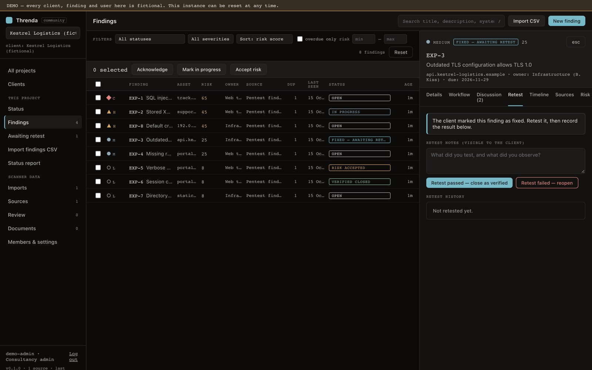
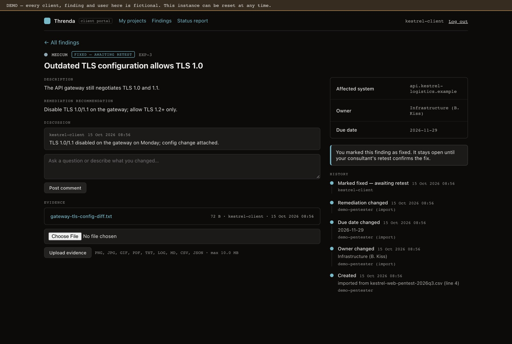
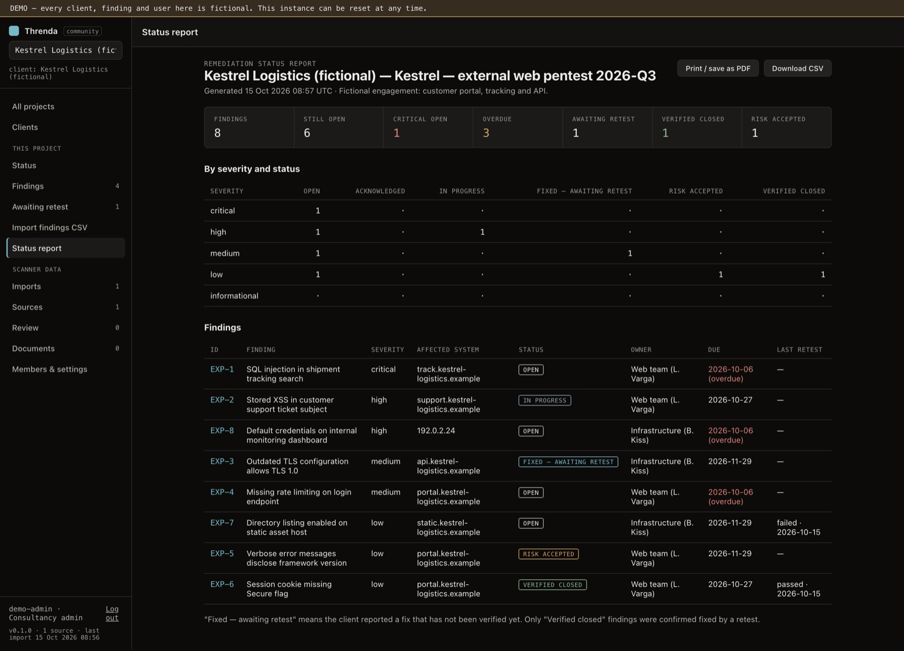
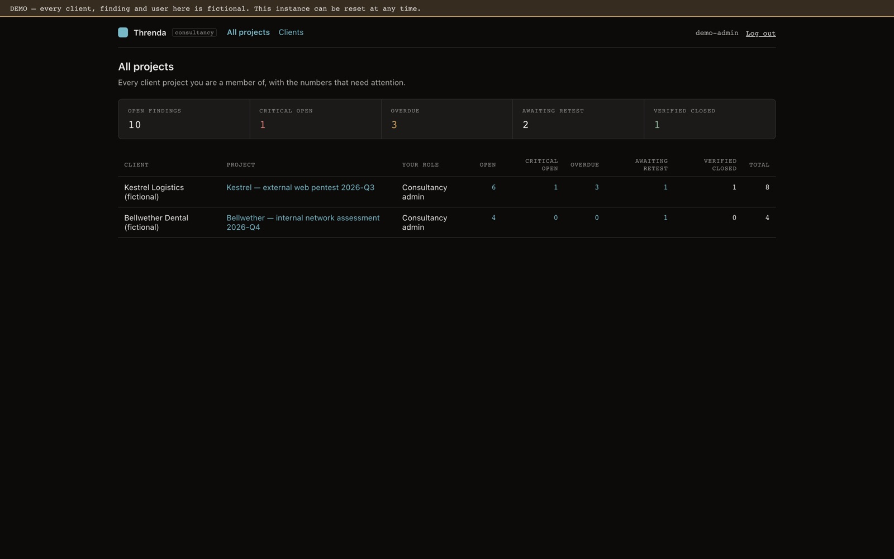
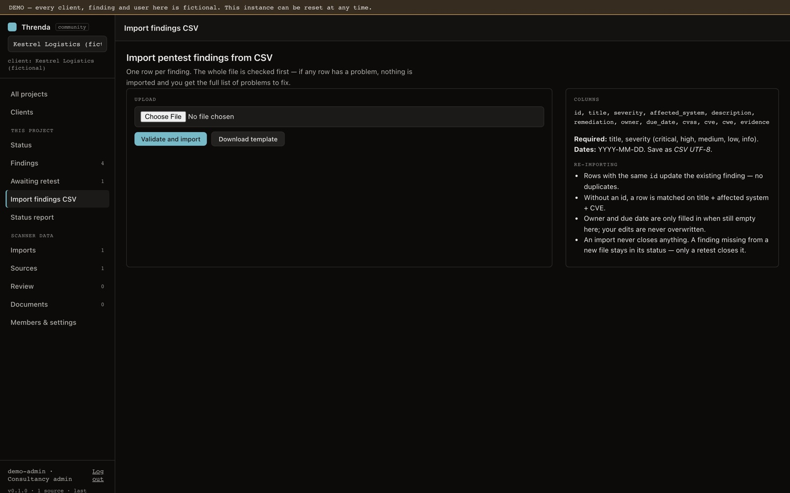

Pentest- és kiberbiztonsági tanácsadó cégeknek
A riport leadása után is tudd, mi lett kijavítva — és mi lett igazoltan lezárva.
A Threnda egy saját szerveren futó finding lifecycle eszköz: a findingeket importálod, kiosztod a javítást, az ügyfél a saját portálján jelzi a javítást és bizonyítékot tölt fel, te retesztelsz, és csak a sikeres retest zárja le a hibát.
Self-hosted · az adatok a saját szervereteken maradnak · telemetria nélkül

A probléma, amit ismersz
A riport PDF-je nem munkalista
Leadás után a findingek táblázatokba, e-mailekbe és ticketekbe szóródnak szét. Nem látszik, kié a javítás és mikor jár le.
„Kijavítottuk" ≠ kijavítva
Az ügyfél jelzése e-mailben érkezik, a retest eredménye egy másik dokumentumba kerül. Nehéz bizonyítani, mi lett ténylegesen ellenőrizve.
A státusz összerakása kézi munka
Minden egyeztetés előtt újra össze kell gyűjteni: mi nyitott, mi kritikus, mi késik, mi vár retestre.
Egy folyamat, a findingtől az igazolt lezárásig
- 1
Findingbevitel
CSV-import letölthető sablonnal (soronkénti hibalistával, duplikáció nélküli újraimporttal) vagy kézi felvétel.
- 2
Javítás kiosztása
Felelős, határidő, javítási javaslat. Minden változás visszakövethető: ki, mikor, mit.
- 3
Ügyféloldali követés
Az ügyfél a saját portálján látja a findingjeit, jelzi a javítást, bizonyítékot tölt fel — a belső megjegyzéseitek nélkül.
- 4
Retest
A „javítva" jelzés retestre vár. A pentester rögzíti az eredményt: sikertelen retest újranyit, a megjegyzés az ügyfélnek is látszik.
- 5
Igazolt lezárás
Lezárni csak sikeres retesttel lehet — sem az ügyfél jelzése, sem egy finding eltűnése az importból nem zár le semmit.
Valós képernyők
Minden kép a működő termékből készült, kizárólag fiktív demóadatokkal.




Kinek szól
Kisebb pentest- és kiberbiztonsági tanácsadó cégeknek, akik több ügyfél javítási folyamatát követik, és szeretnék, ha az ügyfél nem e-mailben, hanem egy közös felületen jelezné a javításokat.
- Ügyfelek és ügyfélprojektek, projektenként elkülönítve
- Szerepkörök: tanácsadói admin, pentester, belső olvasó, ügyféloldali felhasználó
- Meghívás egyszer használatos linkkel — a meghívott maga állít jelszót
- Hozzászólások (belső vagy ügyfélnek látható), bizonyítékcsatolmányok, eseménytörténet
Ami a jelenlegi verzióban nincs
Hogy pontosan tudd, mit kapsz:
- e-mail-értesítések
- SSO és kétfaktoros belépés
- Jira / ServiceNow integráció
- magyar nyelvű felület (a felület angol)
- független biztonsági audit és tanúsítványok
Gyakori kérdések
Hol vannak az adataink?
A saját szervereteken: a Threnda self-hosted, Docker Compose-zal és PostgreSQL-lel fut. A bizonyítékfájlok is az adatbázisban vannak, így egy adatbázismentés mindent ment. A Threnda nem küld adatot sehova.
Az ügyfél látja a belső megjegyzéseinket?
Nem. A belsőnek jelölt megjegyzések és fájlok, az importadatok és más ügyfelek projektjei nem érhetők el az ügyfél számára — ezt a szerver ellenőrzi, nem csak a felület rejti el.
Le tudja zárni az ügyfél a findinget?
Nem. Jelezheti, hogy dolgozik rajta vagy kijavította; lezárni csak a pentester tudja, sikeres retest után.
Mennyi a telepítés?
Egy Linux szerveren Dockerrel jellemzően egy óra a HTTPS-sel együtt. A pilot során ebben segítünk.
Mennyibe kerül?
A pilot feltételeit a demó után egyeztetjük.
Kérj egy 10 perces demót
Végigmegyünk egy ügyfélprojekten: import, felelősök és határidők, ügyféloldali javításjelzés, retest és igazolt lezárás, összesített állapot. Utána beszélünk egy 30 napos pilotról.